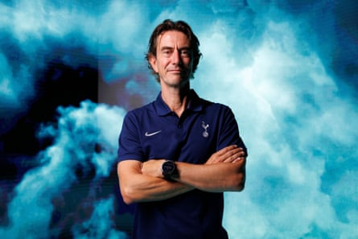
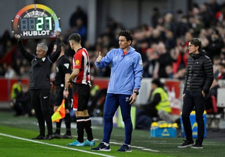

P hil Giles had already given the update on Christian Nørgaard. “It’s more likely than not,” the Brentford director of football said, suggesting that the club captain was close to sealing a £10m move to Arsenal , which is expected to feature £5m in add-ons. Then it was time for Giles to do likewise with Bryan Mbeumo, who is the subject of a bid from Manchester United. Brentford value their 20-goal top scorer from last season at about £65m. United are nearly there with it.
“We’ve made our point clear,” Giles said. “If Bryan earned a massive move now and it was right for us financially, we’d be open to it. But if he ended up here with us next season, I wouldn’t be massively surprised. We’d be delighted. And it would save me a massive headache, frankly.” With that, Giles glanced at the man to his left – the new Brentford head coach, Keith Andrews, presumably the source of said headache if Mbeumo were to leave.
What a summer it has been so far at the west London club. The longstanding manager, Thomas Frank, has gone to Tottenham, together with three key members of staff, including the assistant, Justin Cochrane. Now the team are being picked over. The goalkeeper Mark Flekken has left for Bayer Leverkusen.
This is the backdrop to the appointment of Andrews and it is impossible to ignore the elephant in the room at the Gtech Community Stadium; the 44‑year‑old has no previous experience as a manager. But here he is, about to succeed an authentic club legend in Frank and cut his teeth in the “toughest league in the world” (Andrews’s own description). Is Giles completely sure about this?
The short answer is yes. The longer one, delivered over 45 minutes on Monday afternoon by him and Andrews, illustrated why there are actually no headaches or stresses. It might look like upheaval but internally at the club it is considered as smooth and easy evolution.
Thomas Frank has departed for Tottenham along with other key members of staff.Photograph: Chloe Knott/Tottenham Hotspur FC/Shutterstock
At Brentford every player, every member of staff, has a price. Frank’s was £10m, which Spurs met, albeit the final portion of his release clause is understood to be payable if performance-related targets are reached. Nørgaard and Mbeumo have theirs. If and when they are triggered, there will be no wailing or soul-searching, only pragmatism; the identification and nurturing of their replacements.
It is what Brentford have done for a long time, certainly since Matthew Benham bought in as the owner in June 2012 with the club in League One and began to change everything with his data-based approach. Caoimhín Kelleher, who has joined from Liverpool, looks a smart successor to Flekken. Brentford’s faith in their model is unshakable.
“If a club comes in for a player or member of staff and you find yourself saying: ‘We cannot sell them under any circumstances,’ you probably have to look at yourself as to why you put yourself in a position where that person is so important that it’s impossible to do anything about that,” Giles said.
“Most of the time when the big clubs are coming in for your players, it’s been an opportunity for them. So, yeah, pretty relaxed about the transfer ins and outs. If the players we’ve mentioned stay, then great. If they leave, it will be on our terms.”
Like Frank before him, Andrews has been promoted from within, having joined last summer as the set-piece coach. It is an interesting detail that the club’s past five promotion-winning managers, going back to 1991-92, were internal appointments. Frank got Brentford up and out of the Championship in 2020‑21. Before him, the successes were provided by Mark Warburton, Andy Scott, Ron Noades and Phil Holder.
“On the point about it being refreshing to promote from within, Liverpool used to do it for 30 years when they were the best team around and it worked for them,” Giles said. “I’m not sure when it fell out of fashion. If it’s good enough for them, it’s good enough for us.”
Keith Andrews joined Brentford last year as the set-piece coach.Photograph: Tony O Brien/Reuters
The important thing to say about Andrews’s coaching career is that it has been a long time in production. And he is not just about set pieces, however much he impressed in that area last season – offensively and defensively. He started coaching during his playing days at Blackburn, taking the club’s under‑14s at the age of 29.
There have been short-lived assistant manager roles at MK Dons in the Championship and Sheffield United in the Premier League, either side of a five-year stint with his native Republic of Ireland, first with the under-21s and then the seniors.
Andrews spoke well at his presentation, personable as usual, promising to be himself and draw upon his varied experiences, including those from his 12-club, 16‑season playing career that took in time in all four English divisions and 35 caps for Ireland. It is tempting to say he has seen it all. Except that it is only just beginning.